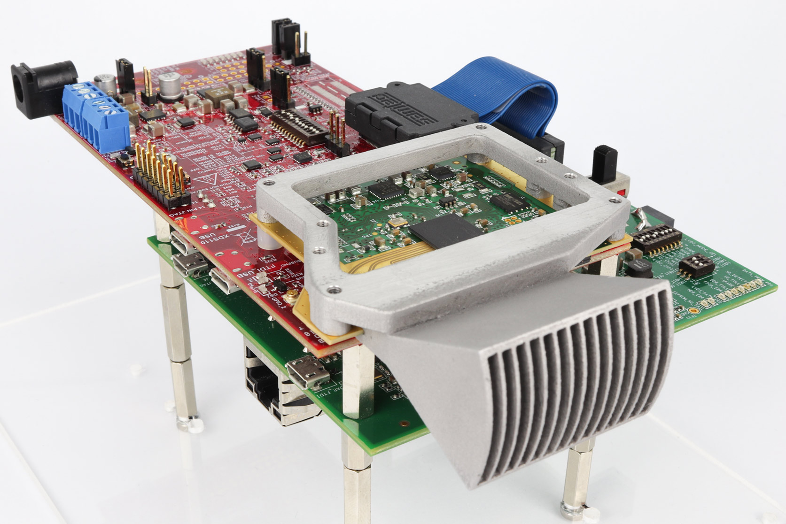
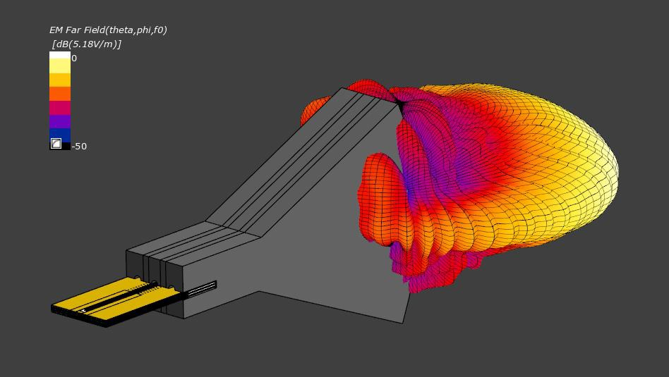
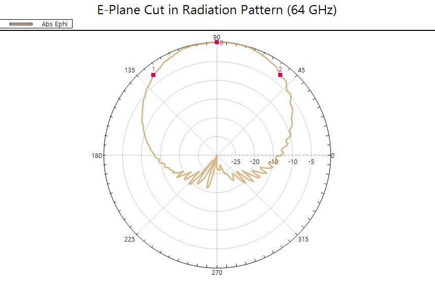

Introduction
============
The <a href="https://www.plextek.com/">Plextek</a> IWR6843ISK radar module with sectoral horn antenna elements is designed for operation across the full licence-free band at 60 GHz. The implementation of a wideband antenna with high efficiency offers improved detection performance and resolution for a 2-dimensional scan requirement, which is particularly useful for detecting and tracking objects on the ground over a wide area.

IWR6843 module with sectoral horn antenna elements
DESIGN ADVANTAGES
=================
The design features PCB edge launches into sectoral horn antenna elements. A sectoral horn has a number of advantages over printed elements including:
<strong>Wide bandwidth</strong> – Enables greater range resolution to discriminate objects in a cluttered environment, as well as frequency multiplexing for simultaneous operation of multiple radars in the same location without causing self-interference.
<strong>High efficiency</strong> – An efficient antenna is fundamental to making the radar a sensitive device. The horn antenna and feed network achieves high efficiency > 80% over the IWR6843 device’s full 4 GHz bandwidth.
<strong>Pattern stability with frequency</strong> – The beam pattern does not change significantly over frequency, thereby giving predictable and consistent results, especially for applications using a wide bandwidth or when operating at different frequencies.
<strong>Well-defined beam pattern</strong> – Low sidelobe levels and wide or narrow beamwidths are all achievable to cover the required field-of-view for individual applications.
<strong>High gain</strong> – Directing the signal over a narrow area with high efficiency enables increased range, albeit over a narrow field-of-view. The horn antenna has the potential to achieve a very high gain compared to other antenna implementations if required.

Far-field radiation pattern from sectoral horn element (64 GHz)
For more details about Plextek's capabilities, please refer to the following link:
https://www.plextek.com/TI
EXAMPLE HORN PARAMETERS
=======================
The horn design featured places the elements on a half-wavelength spacing to ensure the array pattern is free from grating lobes, which could otherwise lead to false target detection.
The transmit elements are located such that a 12-element virtual array is formed in the same dimension; this improves the angular resolution at the expense of elevation resolution. However, elevation resolution can still be achieved with a horn antenna approach if required.
The horn dimensions were optimised to give a wide azimuth radiation pattern, which provides wide coverage for the radar sensor, thereby reducing the number of radars required to cover a given area.
SIMULATED PERFORMANCE
=====================
Simulated antenna gain 12.8 dBi at 60 GHz and 13.1 dBi at 64 GHz.
Simulated half-power beam width is 77 degrees in azimuth and 17 degrees in elevation.
Simulated 30 dB front-to-back ratio.
The measured results are consistent with the simulations.

E-plane cut in radiation pattern (64 GHz)